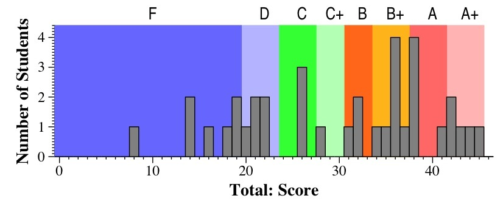
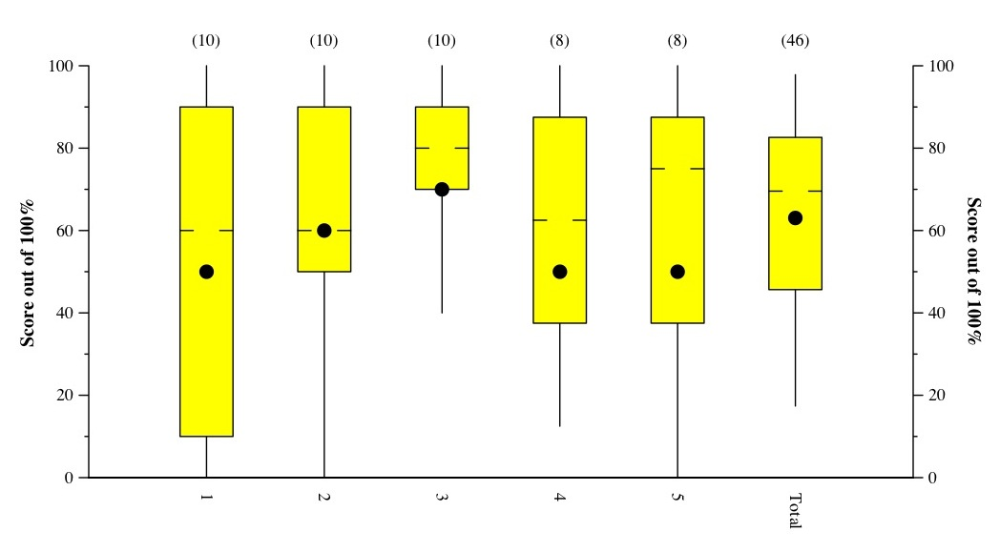
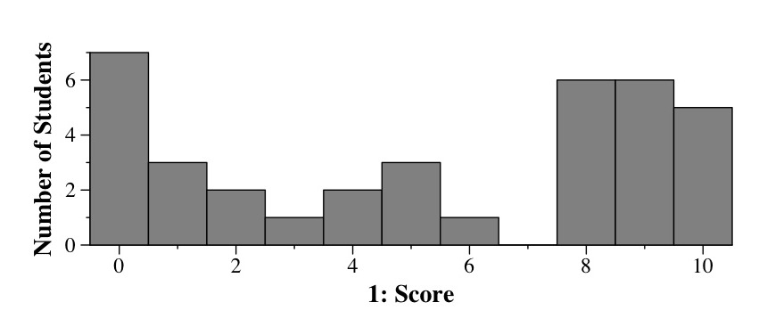
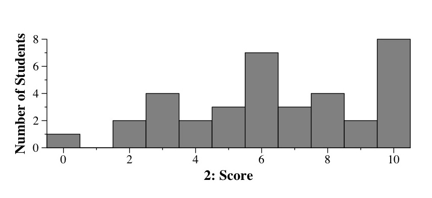
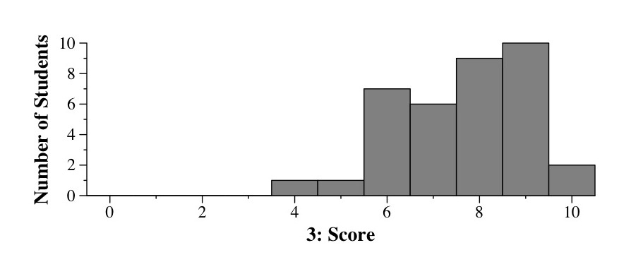
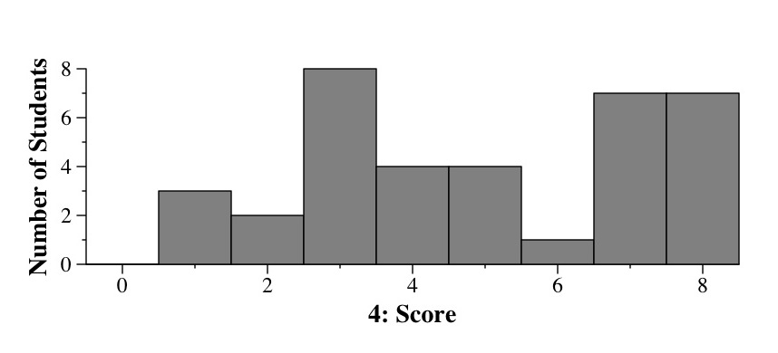
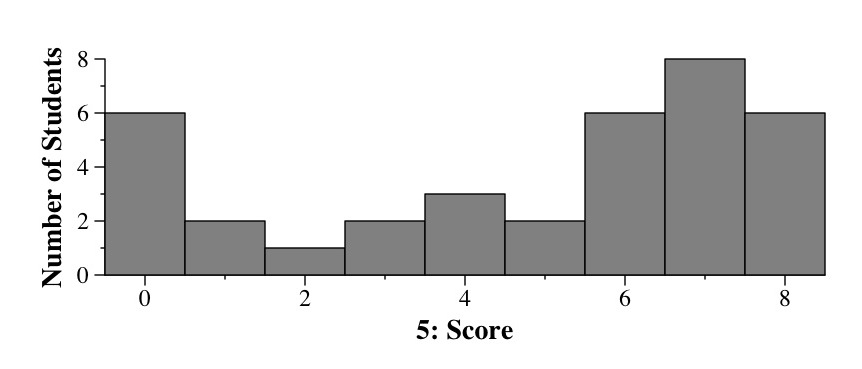

CS140 Midterm Exam -- October 10, 2006
Files
Comments

A straightforward exam. Question one was straight from the lecture notes.
Question two was of a type you should have expected -- it had no tricks.
Question three had some tricky parts. Question 4 was straightforward stack/queue
code, and question 5 was easier than many of your lab programs. I expected good
grades, and was greeted by many excellent exams.
- A+: 42 to 46
- A: 38 to 42
- B+: 34 to 38
- B: 31 to 34
- C+: 28 to 31
- C: 24 to 28
- D: 20 to 24
- F: Below 20
Tukey Plots and Histograms

(This is a Tukey Plot, which has lines to the max and min, yellow box denoting
the 1st and 3rd quartiles, hash marks at the median, and dot at the mean).




